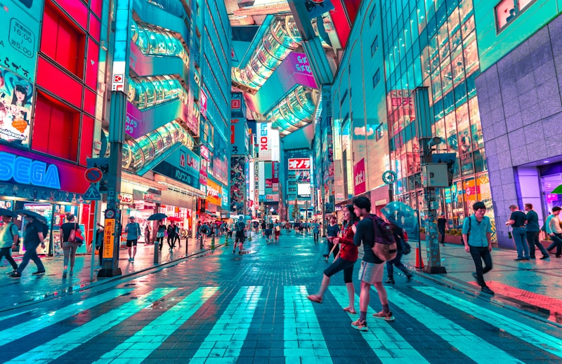
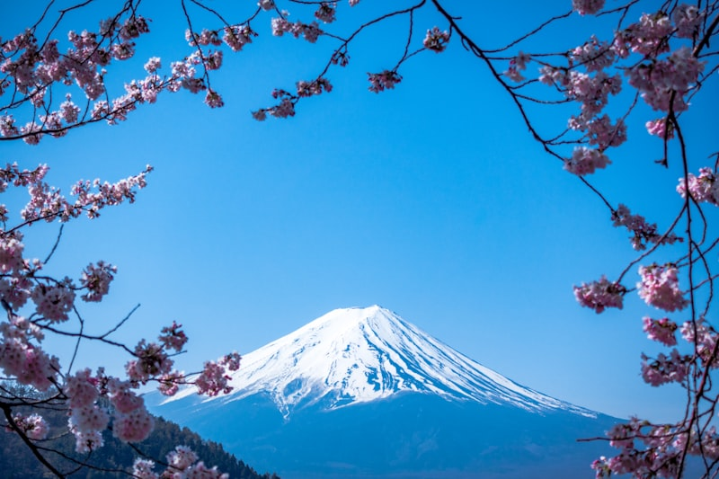
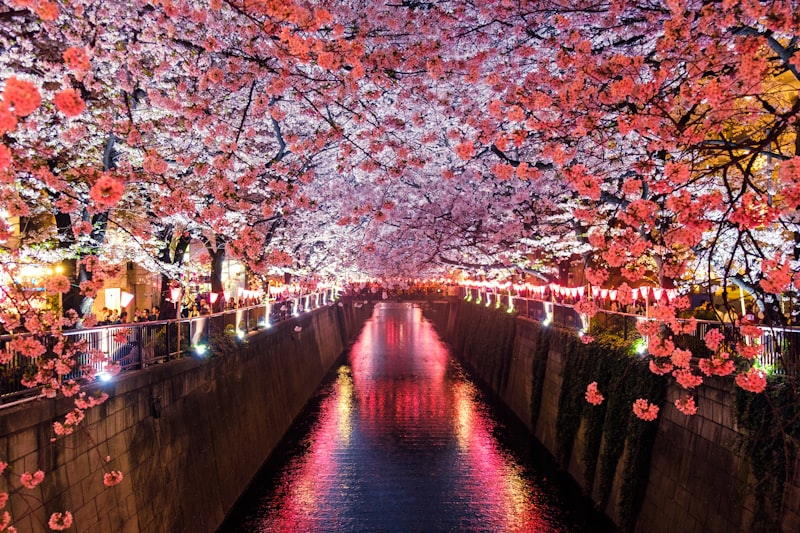
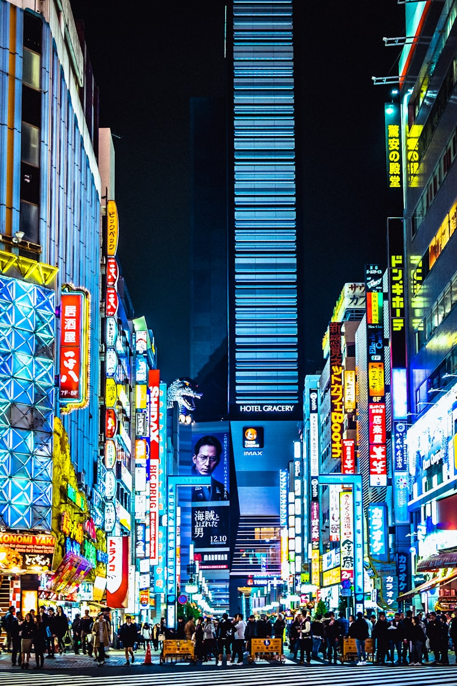
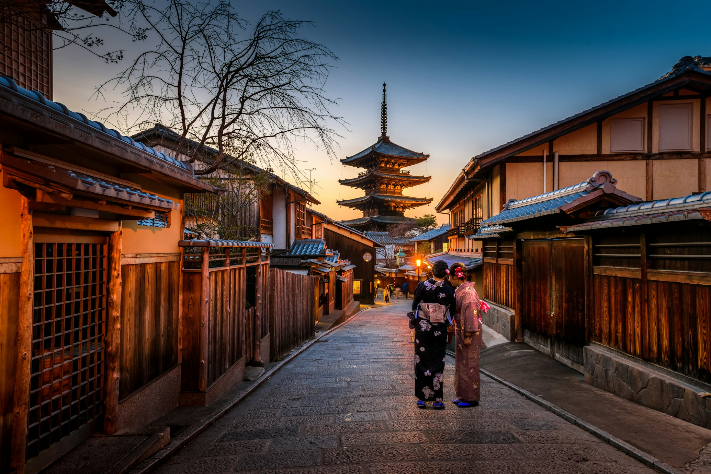
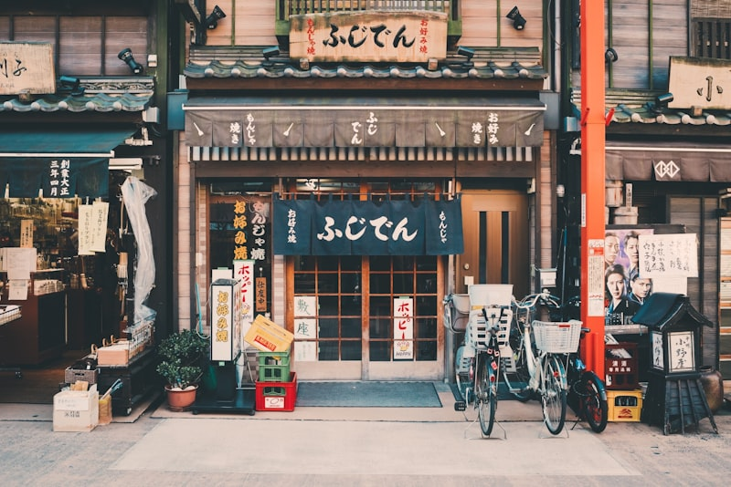

Exclusive Travel Experiences
Luxury Private Tours
in Japan
Discover Japan in Your Own Way with expert local guides and curated itineraries.
Exclusive Travel Experiences
Discover Japan in Your Own Way with expert local guides and curated itineraries.
Enjoy exclusive access and 100% customized itineraries tailored to your interests and pace.
Travel with professional local experts who share the soul and hidden stories of Japan in fluent English.
Change your plans on the fly. We adapt to your needs to ensure a stress-free and luxury experience.
Our Favorites

Explore the neon lights of Shinjuku and the tranquility of Meiji Shrine at your own pace.
Explore More
Immerse yourself in traditional temples, tea ceremonies, and the historic Geisha district.
Explore More
Witness the majesty of Japan's most iconic mountain with private transportation and local stops.
Explore More



Testimonials
"The best way to explore Japan. Our private guide was incredibly knowledgeable and made us feel like locals in Kyoto."
"Our family tour to Mt. Fuji was flawless. The flexibility and personalized attention were unlike any other tour we've had."
"A truly unforgettable experience. Every detail was planned perfectly, allowing us to just relax and enjoy the culture."
The Process
Tell us about your trip and what you're interested in.
We design your 100% customized tour itinerary.
Relax and experience Japan privately with your guide.
Why Choose Us
Our guides aren't just experts; they're residents who love showing the soul of their cities.
No rigid schedules. We move at your pace, allowing for spontaneous discoveries along the way.
From private transport to exclusive entries, we handle every detail with a touch of elegance.
Our Team

Professional English Guide
Specializing in Kyoto's deep history and hidden temples.
Local Cultural Expert
Enthusiastic about food culture and modern Tokyo lifestyle.
Common Questions
Absolutely. 100% of our tours are customized to your specific interests and time frame.
Yes, all our guides are fluent in English and are professional local experts.
We recommend booking at least 2-3 months in advance, especially during peak seasons (Spring and Autumn).
Ready to Explore?
Contact us today for a free consultation and personalized itinerary.
Contact UsLP Production Sample